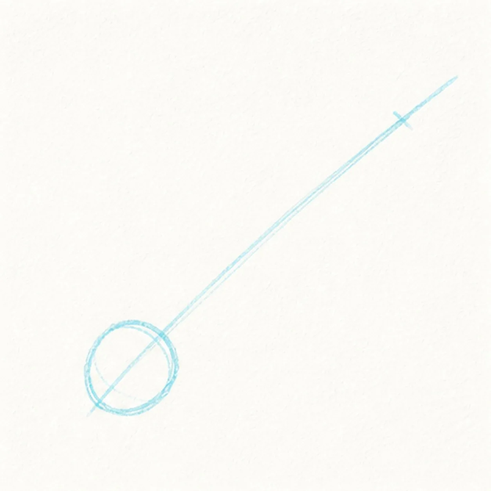
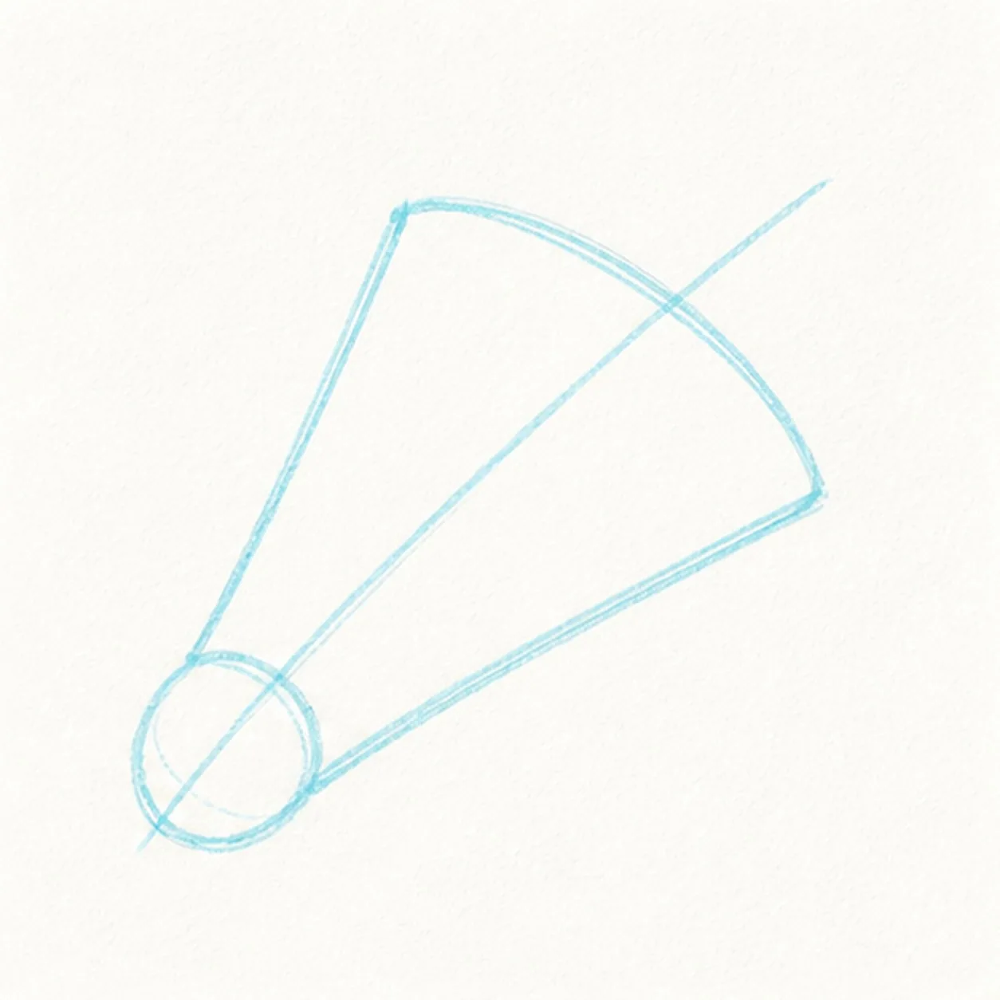
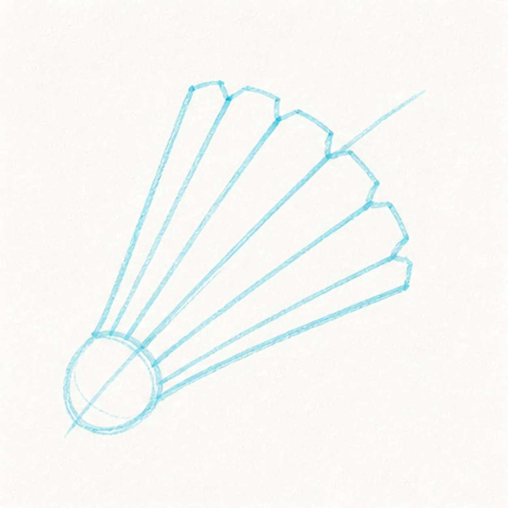
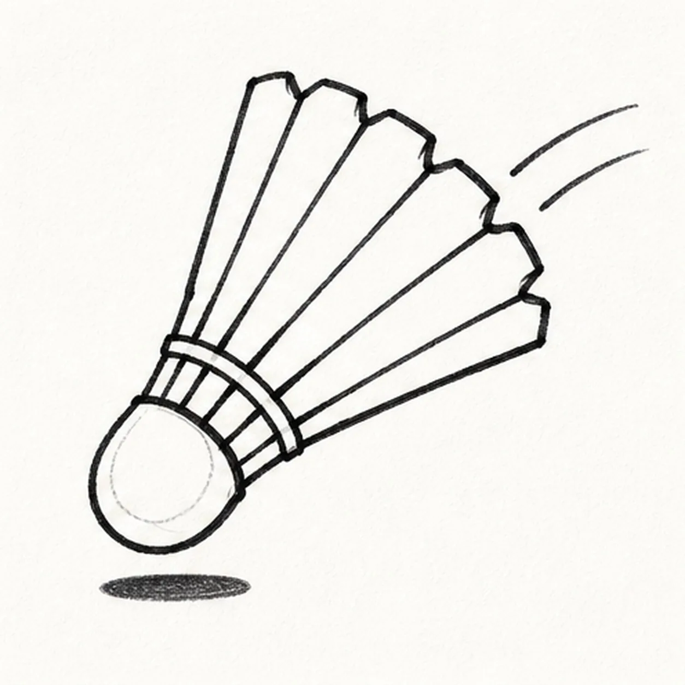
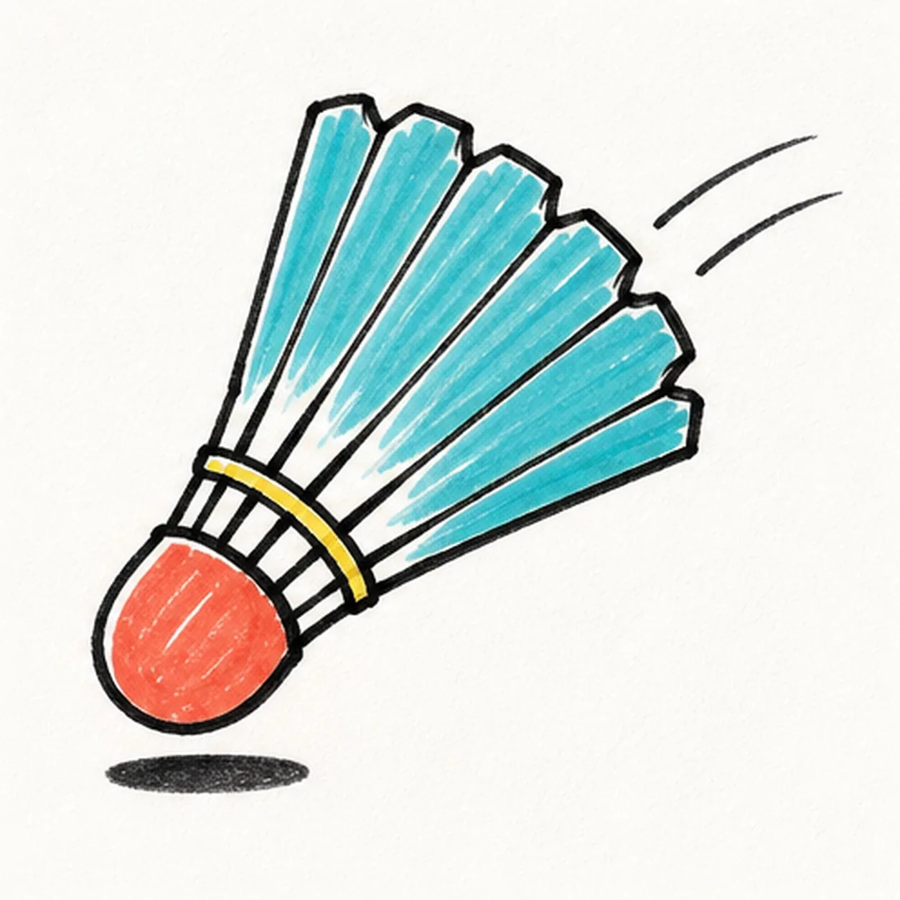

Felt-tip marker mode
Let's draw a badminton shuttlecock in motion
Treat this as one playful practice round: sketch the idea loosely, simplify the shapes, then commit with confident marker outlines and bright fills.
-
01

Aim the cork and center line
Draw one light diagonal center axis from lower left to upper right, then place a rounded cork cap at its lower end.
Marker tip: Ghost the flight line twice before touching down and let it pass through the cork's center. Keep both marks pale so the later silhouette can replace them cleanly.
-
02

Open the feather skirt
Add one flared conical skirt around the center axis and connect its narrow end cleanly to the established cork cap.
Marker tip: Rotate the page for the two long skirt edges and pull each in one confident pass. Compare the open wedge on both sides of the center line before closing the rim.
-
03

Divide six feather vanes
Split the established skirt into exactly six broad feather vanes with six related center shafts and small notches at the outer tips.
Marker tip: Mark all six tip positions along the rim before drawing inward. Count the six wedges, then compare their widths instead of trying to make them mechanically identical.
-
04

Bind the feathers and show flight
Ink the existing silhouette, add one curved binding band and six short root spokes above the cork, then draw exactly two speed arcs and one small oval shadow.
Marker tip: Turn the page so the binding curve can be pulled in one relaxed stroke. Reserve the band area before darkening the spokes, and keep both speed arcs parallel to the flight path.
-
05

Ink and fill the flight colors
Thicken every established contour, fill the cork coral, fill all six feathers cyan with visible streaks and white paper gaps, and color the binding band yellow.
Marker tip: Pull each cyan stroke from the binding toward its feather tip so the fill follows the fan. Let the color dry before reinforcing the black feather edges.
-
06

Snap the shuttlecock into focus
Strengthen the keeper outlines and clarify the established cork, six feathers, six root spokes, yellow band, two speed arcs, marker fills, highlights, and shadow.
Marker tip: Count six feathers, six root spokes, and two speed arcs, then stop. A face, racket, hand, net, player, lettering, sticker edge, or badge frame would crowd the clean flying silhouette.